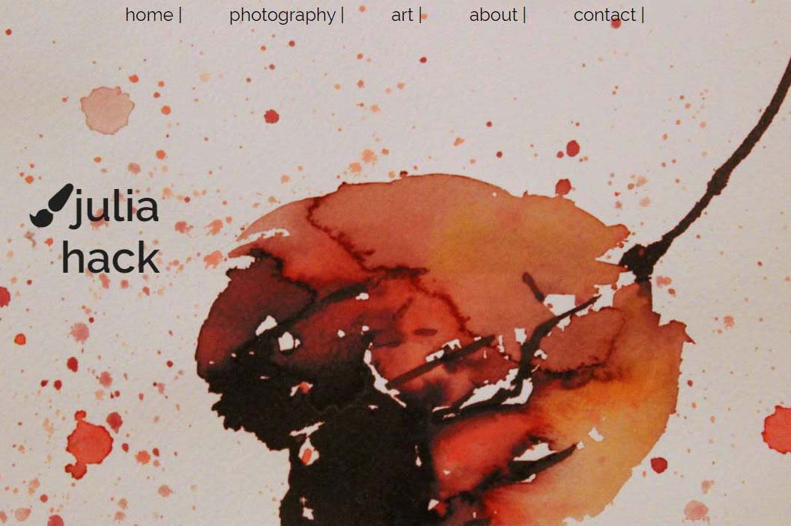

Art Portfolio Website
This is my first portfolio site from an early course in my SAIT program. I chose to display my artwork and photography. To make it look like an artist’s website I chose a watercolor piece with paint splatters as the header image, as well as a minimal and classy font.